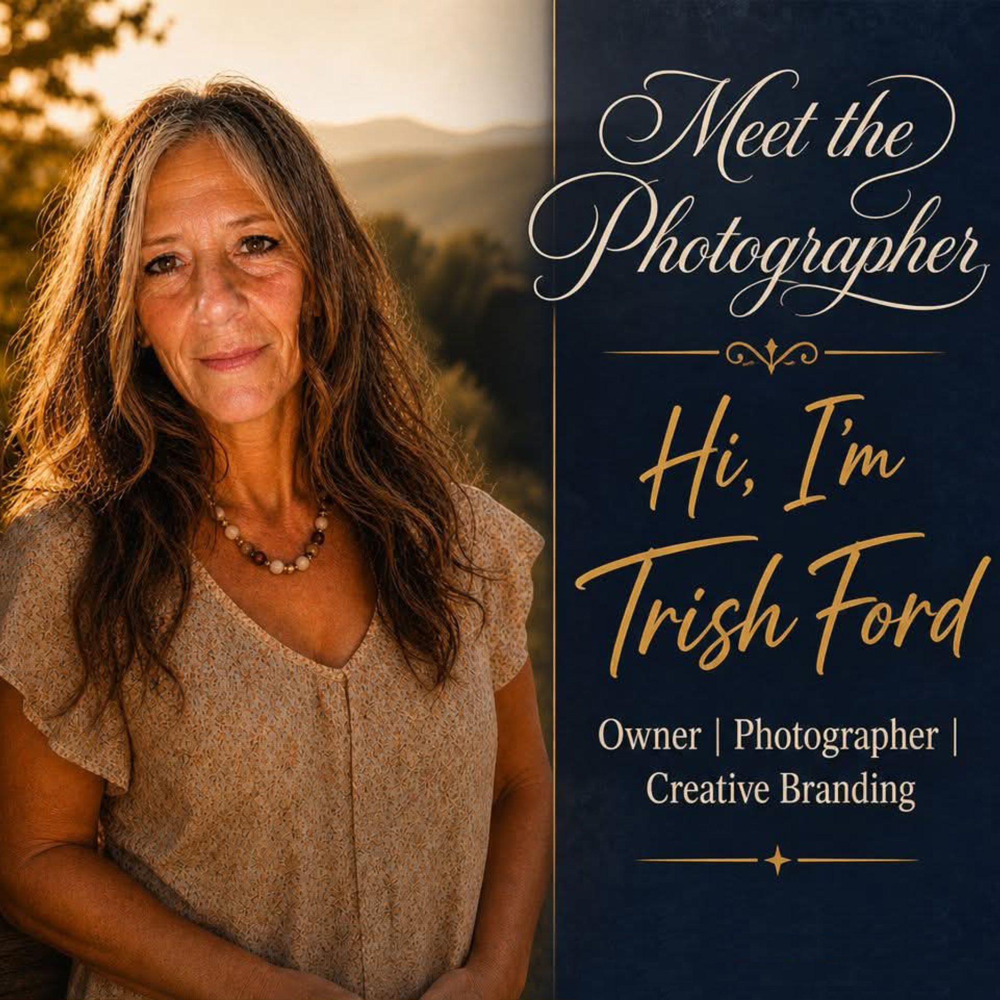

Freezing Time on the Backroads of West Virginia

I tried to step away, but some callings are simply a part of who you are.
For me, creating isn't just a profession—it’s an art form. My journey began behind the lens as a photographer, capturing major life moments and the raw, authentic stories of the people in front of my camera. But over time, my passion evolved. I realized that my love for building, business, and art couldn't be contained by a single medium.
Today, 304 Time Freeze has transformed from a traditional photography studio into a full-service creative and operational support powerhouse.
My mission is simple: to serve my clients with absolute purpose, helping both individuals and business owners show up fully and grow strong. Guided by faith, integrity, and an unyielding commitment to exceptional customer care, I provide comprehensive, end-to-end solutions that bridge the gap between creative vision and back-end execution.
Whether I am behind the camera capturing your brand’s next visual campaign, designing high-impact marketing materials, or working behind the scenes to streamline your business operations, I put my whole heart into everything I build.
You deserve to feel confident, valued, and completely taken care of. Let's quit chasing trends, tune out the noise, and build something meaningful together.
Interested in a session? Reach out today to discuss availability and receive our current pricing guide.
Email Us for Details